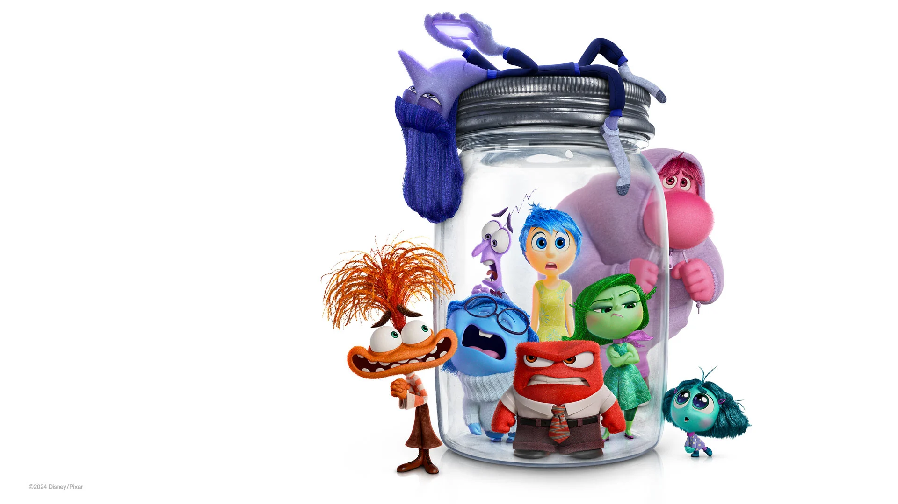

It teaches us about emotions. The movie shows that all emotions, including sadness, are important and help us understand ourselves.
It has a meaningful story. It shows the importance of family, friendship, and accepting changes as we grow up.
Its most famous main theme track is widely known as "Bundle of Joy".
The album title is [Inside Out (Original Motion Picture Soundtrack)], composed by Michael Giacchino.
PIXAR ANIMATION STUDIOS
Click Here